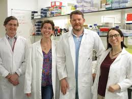

Overgrowth-intellectual disability (OGID) syndromes are a group of conditions characterized by increased height and/or head circumference (≥2SD) in association with an intellectual disability.
This study, led by Professor Kate Tatton-Brown, has recruited over 2000 patients with OGID, identified new genes (DNMT3A, EZH2, PPP2R5D, and HIST1H1E), defined new clinical syndromes and translated the findings into clinical practice.
The work, in partnership with St. George’s NHS Trust, will be using the very latest genomic technologies and bioinformatics to investigate new genetic causes of OGID syndromes and define associated clinical presentations and natural history of these conditions.
These findings in turn will be integrated into clinical practice, informing patient management and genetic testing opportunities through NHS diagnostic laboratories.
Apittman
KTB

Keverett

Pcurry
Ccarroll

| Staff | Role |
|---|---|
| Apittman | Bioinformation |
| KTB | PI |
| Keverett | PI |
| Pcurry | RA |
| Ccarroll | RNA |
Email address: OGID@SGUL.ac.uk